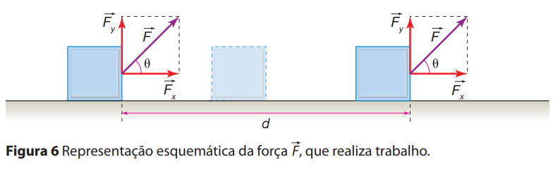
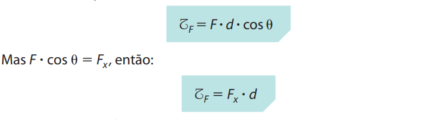
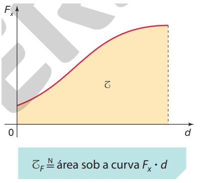

Trabalho de uma Força
Realizar trabalho significa usar uma força para mover um objeto por certa distância. Fisicamente falando, o trabalho de uma força é a medida da quantidade de energia fornecida ou retirada de um corpo ou de um sistema por meio da aplicação de uma força.
O trabalho T realizado por uma força é uma grandeza escalar. Para o caso de uma força constante F aplicada a um corpo, o trabalho é, por definição, o produto da intensidade F da força pelo módulo d do deslocamento pelo cosseno entre a força e o deslocamento.

Analiticamente, temos:

Se a componente Fx tiver o mesmo sentido do deslocamento, o trabalho será positivo (trabalho motor) e ela transferirá energia ao sistema; se Fx tiver sentido oposto ao do deslocamento, o trabalho será negativo (trabalho resistente) e ela retirará energia do sistema.
No Sistema Internacional de Unidades (SI), o trabalho é medido em joule (J), unidade que homenageia o cientista inglês James Prescott Joule (1818-1889). Note que 1 joule é o trabalho realizado por uma força de 1 newton atuando por uma distância de 1 metro na direção e no sentido da força.
A expressão para o cálculo do trabalho é aplicável apenas quando a força F é constante, isto é, quando a força tem módulo, direção e sentido constantes. Para uma força com direção constante e módulo variável, o trabalho deve ser calculado com base no gráfico de Fx em função de d. No gráfico Fx por d, o trabalho T é numericamente igual à área abaixo da curva.

Vídeo 1
Exercícios de Fixação
.jpg)
.jpg)